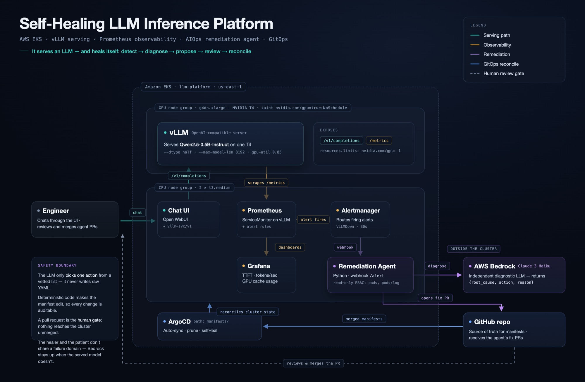

llm-platform is an open-source stack that serves open-weight models with vLLM on Kubernetes. Its AIOps agent turns a firing alert into a diagnosed, reviewable fix PR. The AI gets no cluster write access. Your Git workflow stays the approval step.
$ git clone https://github.com/hritikmunde/llm-platform
================================================== ALERT RECEIVED status=firing alertname=VLLMDown deployment=vllm ================================================== ---- GATHERED CONTEXT ---- --- pod vllm-… (phase=Running) [lastTerminated=Error] --- ValueError: User-specified max_model_len (999999) is greater than the derived max_model_len (32768) … ---- DIAGNOSIS ---- root_cause: max_model_len exceeds the model's max position embeddings (32768) action : lower_max_model_len ---- PR ---- PR opened: github.com/hritikmunde/llm-platform/pull/8 ==================================================
The real incident behind PR #8, abridged
Get started
Terraform defines the whole platform, and ArgoCD deploys it from Git. You run three steps.
aws, terraform, kubectl, helm# 1. provision VPC + EKS + GPU node group $ git clone https://github.com/hritikmunde/llm-platform && cd llm-platform/terraform $ terraform init && terraform apply $ aws eks update-kubeconfig --region us-east-1 --name llm-platform # 2. install ArgoCD + the monitoring stack $ kubectl create namespace argocd $ kubectl apply -n argocd -f https://raw.githubusercontent.com/argoproj/argo-cd/stable/manifests/install.yaml $ helm repo add prometheus-community https://prometheus-community.github.io/helm-charts $ kubectl create namespace monitoring $ helm install monitoring prometheus-community/kube-prometheus-stack -n monitoring # 3. let ArgoCD deploy the platform from Git $ cd .. && kubectl apply -f argocd-app.yaml
The GPU node bills by the hour. terraform destroy tears everything down, and because all state lives in Git, the next apply rebuilds it exactly. Full walkthrough in the README.
Real output, not a mockup
We deliberately pushed an invalid --max-model-len. vLLM refused to start and VLLMDown fired.
The agent read the pod logs, asked Bedrock for a diagnosis, and opened this PR. A maintainer merged it and ArgoCD rolled it out.
agent-fix-lower_max_model_len-1785182951 → master
VLLMDownlower_max_model_lenHow it works
The parts are standard cloud-native tools. The agent connects them, and Git sits between the agent and the cluster.
Prometheus rules catch VLLMDown and CrashLoopBackOff. Alertmanager sends a webhook to the agent.
The agent pulls pod state and recent logs with a read-only ServiceAccount.
Bedrock returns {root_cause, action, reason}, choosing from a fixed list of actions.
Deterministic code edits the manifest and opens a PR that includes the diagnosis.
A human merges. ArgoCD syncs the cluster and the platform recovers.
The model returns one action from a vetted list. Plain code makes the edit, so you can predict every possible diff in advance.
lower_gpu_memory_utilizationlower_max_model_lenrollback_deploymentno_action_neededThe PR is the approval step, and its description holds the full reasoning. Diagnosis runs on Bedrock, outside the cluster, so the agent stays up even when the served model goes down.
Extend it
Each capability is a small, reviewable addition. Contributing a new failure mode is the easiest way to get involved.
ALLOWED_ACTIONS. That list is all the LLM can choose from.apply_fix_to_manifest(). Keep it one bounded, deterministic change.manifests/alert-rules.yaml.# The LLM only CHOOSES one of these. ALLOWED_ACTIONS = [ "lower_gpu_memory_utilization", "lower_max_model_len", "rollback_deployment", "no_action_needed", + "raise_memory_limit", ] def apply_fix_to_manifest(text, action): # ...existing actions... + if action == "raise_memory_limit": + m = re.search(r'(memory:\s*")(\d+)(Gi")', text) + if m: + new = str(int(m.group(2)) * 2) + return (text[:m.start()] + m.group(1) + new + + m.group(3) + text[m.end():], + f"raise memory {m.group(2)}Gi -> {new}Gi")
Architecture
A tainted GPU node group serves the model. A CPU node group runs observability, the chat UI, the agent, and ArgoCD. All of it is defined in Terraform and Kubernetes manifests.

Project status
The core loop works end to end on real infrastructure. Here's what's solid and what isn't yet.
rollback_deployment is diagnosed but not yet automatedmasterCommunity
This is an early project, so every issue and PR has a big influence on where it goes.
Something broke or the docs are unclear? Tell us what you ran and what happened.
Open an issue → ideaDescribe an incident the agent should handle and how a human would fix it.
Propose it → codeAdd a remediation action, an alert rule, or support for another cloud.
Contributing guide → contactQuestions, collaborations, or anything else.
contact@llm-platform.tech